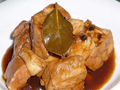
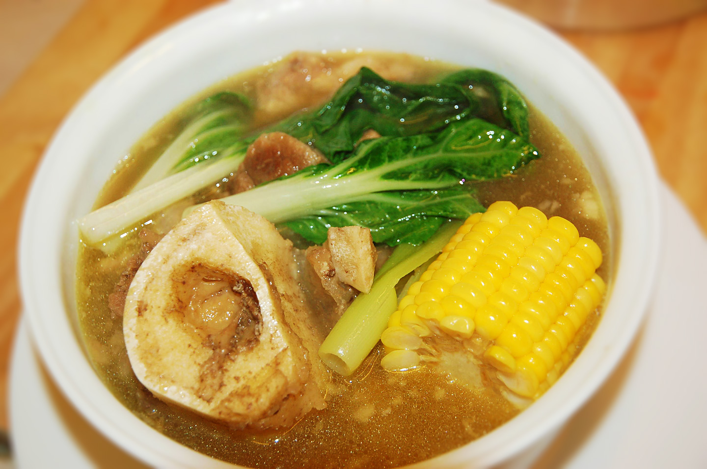
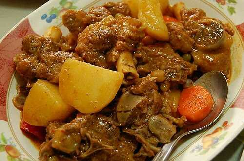
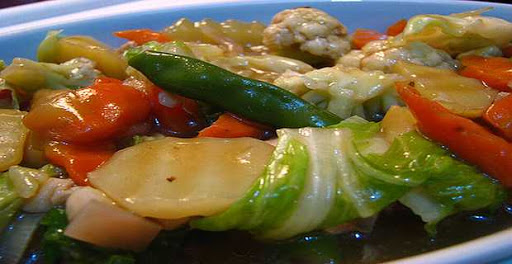

PINASarap Recipes
Adobong Baboy
Ingredients:
- Garlic, minced or crushed
Instructions:
- Combine the pork belly, soy sauce, and garlic then marinade for at least 1 hour.
- Heat the pot and put-in the marinated pork belly then cook for a few minutes.
- Add water, whole pepper corn, and dried bay leaves then bring to a boil. Simmer for 40 minutes to 1 hour.
- Put-in the vinegar and simmer for 12 to 15 minutes.
- Add salt to taste.
- Serve hot. Share and enjoy!

Adobong Sitaw
Ingredients:
- String beans (sitaw), cut in 2 inch length
- Pork belly, thinly sliced (optional)
- Medium-sized onion, thinly sliced lengthwise
- Teaspoon of ground black pepper
Instructions:
- Heat a frying pan or wok then sear the pork.
- When oil and juice comes out of the pork, add garlic and onions then cook for 2 minutes.
- Pour-in the soy sauce, vinegar, and water then bring to a boil.
- Shake-in the ground black pepper and stir.
- Cover and simmer for 15 minutes or until the pork is tender.
- Add the string beans and cook for 3 to 5 minutes.
- Turn off the heat and transfer to a serving bowl..
- Serve hot with steamed rice.
- Share and enjoy!

Bulalo
Ingredients:
- Small cabbage, whole leaf individually detached
- Corn, each cut into 3 parts
Instructions:
- In a big cooking pot, pour in water and bring to a boil
- Put-in the beef shank followed by the onion and whole pepper corn then simmer for 1.5 hours (30 mins if using a pressure cooker) or until meat is tender
- Add the corn and simmer for another 10 minutes
- Add the cabbage, pechay, and green onion (onion leeks)
- Serve hot. Share and enjoy!

Caldereta
Ingredients:
- Medium red bell pepper, sliced
- Medium green bell pepper, sliced
- Medium baking potatoes, cut into large cubes
- Medium carrots, sliced diagonally
- Medium yellow onion, sliced
Instructions:
- Heat the oil in a cooking pot.
- Once the oil is hot, saute the garlic and onion.
- Add the pork. Stir and cook for for 5 minutes or until the color turns light to medium brown.
- Pour-in the tomato sauce and beef broth. Let boil. Cover and simmer for 60 minutes.
- Add the liver spread. Stir and cook for 3 minutes.
- Put-in the carrots and potatoes. Cover and cook for 8 to 10 minutes.
- Add the olives and bell peppers. Cook covered for 8 minutes.
- Add salt and pepper to taste.
- Turn-off the heat. Transfer to a serving plate.
- Serve hot. Share and enjoy!

Chop Suey
Ingredients:
- Cauliflower, cut into small pieces
- Shrimp juice (derived by crushing the head of the shrimp) or use shrimp bouillon
Instructions:
- Saute the garlic and onion
- Add the boneless chicken and saute for 2 minutes
- Put-in the chicken liver and let cook for 3 minutes more
- Pour in the shrimp juice and 1 cup of water and bring to a boil. Cover the pot and simmer for 5 minutes.
- Add the shrimp then sprinkle some salt and pepper.
- Add the oyster sauce and simmer for 2 minutes.
- Put-in the cauliflower and cabbage then mix well
- Add the carrots,snow peas, and bell pepper. Cover the pot and simmer for 5 minutes or until vegetables are cooked
- Dilute the cornstarch in cup of water then pour mixture in the pot. Mix well.
- Serve hot. Share and enjoy!

1